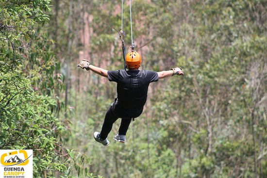

¿Qué es?
El barranquismo es un deporte extremo o de aventura,
este se practica en los barrancos cercanos a ríos. El objetivo de este relativo
nuevo deporte es recorrer los barrancos o caminos aledaños utilizando diversos
tipos de técnicas o movimientos como: caminar, escalar, nadar, saltar,
hacer rapel, entre otros.
Aunque no hay una manera correcta de hacerlo, debido a que depende del
deportista, generalmente suelen comenzar con técnicas de rapel.
¿Qué se usa? Lo esencial, un traje de neopreno debido al agua,
zapatos deportivos que sean cómodos, que ofrezcan buen agarre y de prefrencia que
soporten el agua. Además, se recomienda usar casco, y tener siempre a la mano algún
tipo de kit de primeros auxilios. Un arnés y una cuerda si es que se va a hacer rapel.
¿Dónde se puede practicar? Hay buenos lugares cerca del
sector de Río Amarillo.
Puenting
¿Qué es? El puenting, mejor conocido por otros como bungee jump
es una actividad en donde una persona se lanza de un puente. Obviamente, el saltador
previamente se ajusta el cuerpo a una cuerda resistente y elástica que se ata en alguna
parte en el lugar donde se inició el salto.
¿Qué se usa? Básicamente, solo se necesita llevar ropa cómoda. En el lugar
en donde se realiza la actividad se suele proporcionar el equipo para el salto; es recomendable
estar seguro de que se está bien de salud para realizar esta actividad.
¿Dónde se puede practicar? Desde la carretera Principal
de Sigsig hacia San Bartolomé, en el puente "La Union".
Canopy

¿Qué es? El canopy es aquella actividad en donde se trasporta
a una persona de un punto elevado hacia otro de menor elevación a través de una
cuerda que va en descenso lo cuál hace que la persona se vaya deslizando a una
velocidad notable.
¿Qué se usa? Al igual que la anterior actividad se recomienda
ropa cómoda. Se proporciona el arnés y el casco en el lugar en donde se lo
practica.
¿Dónde se puede practicar? En Cuenca, se lo puede practicar en el
sector de Bibín. (vía Ricaurte km 7.8)
Además hay buenos lugares en Girón.
Esta es una actividad altamente popular para turistas extranjeros, los cuales, ya sea en grupos o en solitario
vienen a disfrutar de esta experiencia.
Turismo Cultural
Sitios Arqueológicos
¿Qué son? Cuando hablamos de sitios Arqueológicos estamos hablando de
lugares en dónde hace mucho tiempo fueron centros de devoción, tradición o cultura, y debido
a diversos factores ahora están en ruinas.
Pumapungo, sin duda uno de los sitios Arqueológicos más conocidos, se encuentra dentro de la zona urbana
de la ciudad de Cuenca, por lo que su acceso es relativamente menos complicado.
Junto a él queda un gran museo el cual toma su nombre, el Museo Pumapungo. Abarca aproximadamente unas
cuatro hectáreas, y se encuentra adornado por un jardín etnobotánico que da facilidad al avistamiento de
aves.
Se encuentra ubicado en la dirección Calle Larga y Av. Huayna Cápac.
En Cuenca se pueden encontrar dos sitios Arqueológicos bastante interesantes, en donde se puede
aprender mucho acerca de las culturas que habitaban en estos territorio antes de la llegada de los
españoles. Uno es el Pumapungo, y la otra la Ruina de Todos los Santos.
Parque Nacional Cajas
¿Dónde queda? El Parque Nacional del Cajas queda a aproximadamente 35 km de Cuenca.
¿Qué hay de interesante? Aunque es notablemente más frío allá (entre los -2 a 15 oC)
tiene hermosos paisajes, además de contar con una gran cantidad de lagos que se unen entre sí a través de pequeños
cuerpos de agua como riachuelos.
Actividades Hay una gran cantidad de cosas que se podrían realizar allá. Desde avistamiento de aves,
senderismo, camping, pesca deportiva. Además se puede aprender mucho acerca de la historia del lugar y de su importancia
para el medio ambiente.